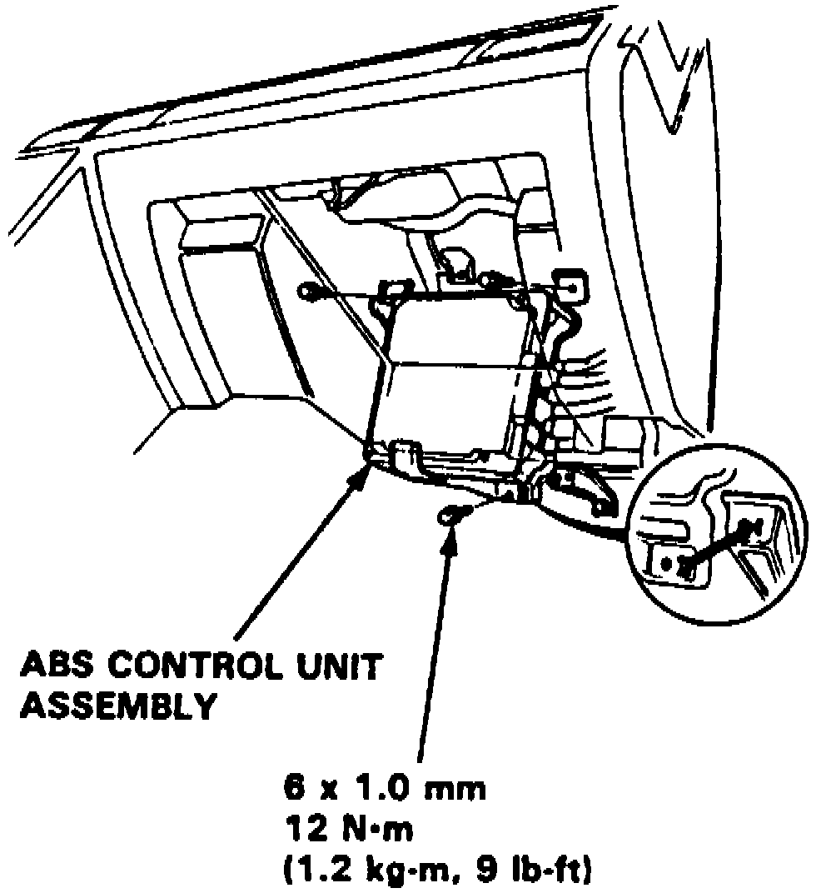

Operation CHARM
: Car repair manuals for everyone.
Home
>>
Acura
>>
1994
>>
Vigor L5-2451cc 2.5L SOHC G25A4 FI
>>
Repair and Diagnosis
>>
Brakes and Traction Control
>>
Relays and Modules - Brakes and Traction Control
>>
Electronic Brake Control Module
>>
Service and Repair
Electronic Brake Control Module: Service and Repair
Fig. 102 Control Unit Replacement:

1.
Remove glove compartment.
2.
Remove
control unit
attaching bolts,
Fig. 102.
3.
Reverse procedure to install.